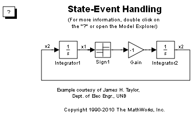
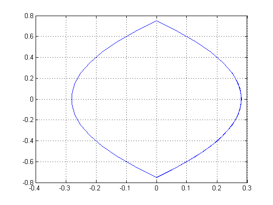

このデモでは、状態イベントの取り扱いを示します。 シミュレーションを実行し、状態 x1 を X 軸、状態 x2 を Y 軸にとる位相面図を確認します。
 
Published with MATLAB® 7.11
MATLAB and Simulink are registered trademarks of The MathWorks, Inc. Please see www.mathworks.com/trademarks for a list of other trademarks owned by The MathWorks, Inc. Other product or brand names are trademarks or registered trademarks of their respective owners.